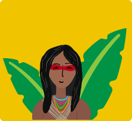

Encuentro de Consejeras Convening of Advisors Encontro de Conselheiras


MENU
R e s p i r a
R e s p i r a
Breathe
Ante la urgencia, la calma
In the face of urgency stay calm
Diante da URGÊNCIA a CALMA
Informe 2018
Annual Report 2018
Relatório Anual 2018
 Ante la urgencia la pausa, ante la urgencia la calma.
In the face of urgency - pause, in the face of urgency – calm.
A aprendizagem perante a urgência e a pausa, e, da mesma à calma.
Ante la urgencia la pausa, ante la urgencia la calma.
In the face of urgency - pause, in the face of urgency – calm.
A aprendizagem perante a urgência e a pausa, e, da mesma à calma.
Ha sido un aprendizaje importante en estos años de experiencia dando respuestas rápidas ante lo no previsto, el riesgo y la crisis.
has been an important lesson emanating from years of experience in providing rapid responses to unplanned situations, risk, and crisis.
tem sido importante nesses anos de experiências dando respostas rápidas ao imprevisto, ao risco e à crise.
La urgencia impone un ritmo, un tiempo, una respuesta que no puede dilatarse, que tiene que ser inmediata y a la vez cuidadosa. El reconocer este ritmo, este tiempo, ha sido vital para nosotras, en especial en este último año, marcado por la inestabilidad democrática en la Región, la injusticia, la impunidad y la represión.
Urgency imposes a rhythm, a timeline, a response that cannot wait; it must be immediate and at the same time careful. Recognizing this rhythm and time-frame has been vital for us, particularly during the last year, characterized by democratic instability in the region, injustice, impunity, and repression.
devido a que a urgência impõe tempo e ritmo, assim como também, uma resposta que não pode ser dilatada, pois deve ser imediata e cuidadosa. O reconhecimento deste tempo e ritmo tem sido vital para nós, em especial neste último ano, marcado pela instabilidade democrática na Região, pela injustiça, a impunidade e repressão.


Tatiana Cordero
Flory Yax Tiu
Flory Yax Tiu
Presidenta de la Junta Directiva President Board of Directors Presidenta Junta Diretiva
Tatiana Cordero
Directora Ejecutiva Executive Director Diretora executiva
Nicaragua, sin lugar a dudas ha sido la expresión más evidente de esta urgencia, y, a la vez, el mayor aprendizaje para dimensionar la necesidad de la pausa y de la calma en medio de un contexto convulsionado por la crisis política. Without a doubt, Nicaragua was the most evident expression of this urgency, and at the same time, the most important lesson for understanding the need for pause and calm amid a tumultuous context generated by political crisis. Para dimensionarmos a necessidade da pausa e da calma, em meio a um contexto balançado pela política, sem dúvidas tem sido Nicarágua, já que vem sendo a expressão mais evidente desta urgência, porque a mesma faz frente para poder reagir a este contexto de repressão como nos tempos da ditadura,
Urgencia, para poder reaccionar ante este contexto de represión como en tiempos de dictadura, urgencia para responder ante una realidad que no cesa, ni se mejora, sino que continúa enseñándose Urgency, to be able to react to this context of repression, similar to that witnessed during the time of the dictatorship; urgency to respond to a reality that is on-going and that does not improve, but rather continues to crush those who question tyranny. assim como ela responde diante de uma realidade que não finda, nem melhora, mas continua indo contra quem questiona a tirania e se faz urgente apoiar a proteção à vida, o cuidado e a sustentabilidade das defensoras e seus coletivos.
contra quienes cuestionan la tiranía. Urgencia para apoyar la protección de la vida, el cuidado y la sostenibilidad de las defensoras y sus colectivos. Y al tiempo, pausa. Pausa para poder respirar, sentir la indignación y el dolor, para soltar y seguir apoyando la fuerza colectiva. Calma para tomar las decisiones más adecuadas. Urgency to support the protection of life and the care and sustainability of women defenders and their collectives. And at the same moment, the time to pause. Pausing to breathe, to feel the indignation and the pain, to release emotions, and to continue supporting collective strength. Calm to make the most appropriate decisions. Isto é que, quando expressamos: “Ao tempo, pausa”, queremos dizer que é preciso dela para respirar, sentir a indignação e a dor, para soltar-se e seguir apoiando a força coletiva, podendo nos fazer até rir e repor forças, para sustentar a esperança, assim como também, para identificar as melhores estratégias coletivas e não atuar através da vontade unilateral.
Pausa para identificar las mejores estrategias colectivas y no actuar desde la voluntad unilateral. Calma Pausing to identify the best collective strategies instead of acting unilaterally. Calm to not increase the risks faced by women defenders or our allies. Por sua vez, quando nos referimos ao termo “calma”, significa que podemos tomar as decisões mais adequadas, porque necessitamos dela para não aumentar o risco das defensoras nem das suas aliadas.
para no incrementar el riesgo de las defensoras ni de nuestras aliadas. Pausa, para poder reirnos y acuerparnos pese a la distancia y para sostener la esperanza. Pausing so we can laugh and acuerparnos in spite of distance, pausing so we can maintain hope.
Hoy, celebramos la fuerza, la valentía y la dignidad del pueblo nicaragüense y de su movimiento feminista. Y agradecemos a la IMD, a la IND, y el FCAM, la posibilidad de crear y aprender colectivamente a dar respuestas ante la crisis, haciéndolo de manera respetuosa, articulada, cuidadosa, flexible y solidaria. Today, we celebrate the strength, courage, and dignity of the Nicaraguan people and its feminist movement. We thank IMD, IND, and FCAM, for the possibility to create and learn collectively in response to the crisis, doing so in a respectful, coordinated, careful, and flexible manner, Com efeito, hoje celebramos a força, a valentia e a dignidade do povo nicaraguense e de seu movimento feminista. Certamente agradecemos à IMD, à IND e ao FCAM a possibilidade de criar e aprender coletivamente a dar respostas frente à crise de maneira respeitosa, articulada, cuidadosa, flexível, e, sobretudo solidária.
La posibilidad de responder colectivamente, por un objetivo en común: el bienestar de las feministas, activistas, defensoras Nicaragüenses y sus colectivos, comunidades y pueblos. rooted in solidarity. This is the possibility of responding collectively towards a common objective: the well-being of Nicaraguan feminists, activists, women defenders, and their collectives, communities, and people. Além disso, somos gratas pela possibilidade de responder coletivamente por um objetivo em comum: o bem-estar das feministas, ativistas, defensoras nicaraguenses e seus coletivos, comunidades e povos.
Celebramos y agradecemos que la solidaridad internacional vuelve a apoyar las luchas y hacer eco de las voces que resisten. Y celebramos que luego de tres siglos, el feminismo vuelve a ser un movimiento de masas, diverso y potente. Eso nos llena de esperanza. We celebrate and thank international solidarity, which has returned to support these struggles and replicate the voices of resistance. And we celebrate that after three centuries, feminism is once again a diverse and strong mass movement. This fills us with hope. Do mesmo modo, celebramos e agradecemos que a solidariedade internacional volte a apoiar as lutas e fazer eco com as vozes que ainda resistem, depois de três séculos, e que o feminismo volte a ser um movimento de massas, diverso e potente, isso nos enche de esperança.
Agradecemos también que somos parte de una manera única de apoyo junto con nuestros Fondos Hermanos de Acción Urgente, de los Estados Unidos, África y Asia y Pacífico; de la fuerza política de nuestra Región junto a la Alianza de Fondos de Mujeres en la América Latina, y de un movimiento feminista que en las jóvenes y, con el trayecto recorrido, tiene la certeza de avanzar y crecer por buen camino. We are also thankful to be part of a unique support mechanism, together with our sister Urgent Action Funds from the United States, Africa, and Asia and the Pacific; of our Region’s political force, alongside the Alliance of Women's Funds in Latin America; and of a feminist movement, recharged by young women, which, based on our trajectory, we are certain will advance and grow positively. Pela mesma razão somos gratas por fazermos parte dos nossos Fundos Irmãos de Ação Urgente dos Estados Unidos, da África, da Ásia e do Pacífico; da força política de nossa Região junto à “Alianza de Fondos de Mujeres en la América Latina” e de um movimento feminista que as jovens, com o trajeto percorrido, tem a certeza de avançar e crescer por um bom caminho.
Agradecemos la confianza de quienes continúan comprometidxs con nuestra Región y sus luchas, que nos han permitido nacer, crecer y hacer redes en estos años. We are thankful for the trust of those who continue to be committed to our region and its struggles, who made it possible for our organization to be born, to grow, and to establish networks over the years. Somos gratas pela confiança daquelxs que continuam comprometidxs com nossa Região e suas lutas, que tem nos permitido nascer, crescer e construir conectando redes pelos anos.
Y por último, agradecemos especialmente la memoria de las mujeres y nuestros pueblos, que son la raíz de todas las resistencias del continente. Agradecemos especialmente la voz, la manos, la compañía, creatividad y guía, de las sanadoras latinoamericanas. Finally, we are especially thankful for the memory of many women and our peoples, the root of multiple resistances throughout the continent. Likewise, we especially thank women healers of Latin America for their voice, hands, companionship, creativity, and guidance. Com o intuito de finalizarmos, lembraremos, gratamente e com ímpeto, a memória das mulheres e nossos povos, que foram, são e sempre serão a raiz de todas as resistências do continente, agradecendo especialmente a voz, as mãos, a companhia, a criatividade e a orientação das curandeiras latino-americanas.
Volver
Return
Retorna
Continuar leyendo
Continue reading
Continue lendo
Nuestros programas Our programs Nossos programas
PROGRAMA PROGRAM PROGRAMA
Mujeres y Territorios Women and Territories Programa Mulheres e Territórios
Nuestra apuesta por el trabajo colectivo junto a organizaciones, fondos y movimientos, ha resultado en una mayor visibilidad y sensibilización frente a la situación de las mujeres defensoras del territorio en la Región. Our emphasis on collective endeavour with other organizations, funds, and movements has led to increased visibility and awareness of the situation faced by women defenders of territory in the region. Nossa aposta com o trabalho coletivo junto às organizações, fundos e movimentos tem resultado em uma maior visibilidade e sensibilização diante da situação das mulheres defensoras do território na região.
PROGRAMA Mujeres y Territorios
Women and Territories PROGRAM
PROGRAM Mulheres e Territórios
En 2018 celebramos el vigésimo aniversario de la adopción de la Declaración de las Naciones Unidas sobre los Defensores y Defensoras de los Derechos Humanos y el quinto aniversario de la Resolución de la ONU sobre Protección a las Mujeres Defensoras. In 2018 we celebrated the twentieth anniversary of the adoption of the United Nations Declaration on Human Rights Defenders and the fifth anniversary of the UN Resolution on the Protection of Women Defenders. Em 2018, comemoramos o vigésimo aniversário da adoção da Declaração das Nações Unidas sobre Defensores e Defensoras dos Direitos Humanos e o quinto aniversário da Resolução da ONU sobre Proteção de Mulheres Defensoras.
Organizamos un evento junto a otras organizaciones aliadas y de manera conjunta con la Relatoría Especial sobre la situación de defensoras y defensores y el Grupo de Trabajo sobre Discriminación contra la Mujer, ambos de la ONU, donde participaron defensoras de 19 países que pudieron compartir sus contextos y sus demandas para una protección integral. We organized an event with other allied organizations, the UN Special Rapporteur on the Situation of Defenders, and the UN Working Group on Discrimination against Woman. Women defenders from 19 countries participated, sharing their contexts and demands for holistic protection. Organizamos um evento com outras organizações aliadas, tais como: a Relatoria Especial sobre a situação das defensoras e defensores, e o Grupo de Trabalho sobre Discriminação contra a Mulher, ambos da ONU, dos quais participaram defensoras de 19 países que puderam compartilhar seus contextos e suas demandas pela proteção integral.
También aprovechamos la oportunidad para realizar un intercambio global de experiencias y estrategias de protección entre activistas, organizaciones internacionales y fondos de mujeres en Nueva York-EEUU, fortaleciendo las redes de apoyo y solidaridad a nivel global. We took advantage of this opportunity to hold a global exchange in New York (USA) on experiences and strategies related to protection, which included activists, international organizations, and women's funds, in order to strengthen international support and solidarity networks. Foi uma grande oportunidade, para aproveitarmos o intercâmbio global de experiências e estratégias de proteção entre ativistas, organizações internacionais e fundos de mulheres em Nova York-EUA, fortalecendo redes de apoio e solidariedade.
Durante el 2018 continuamos trabajando colectivamente junto a organizaciones y fondos de mujeres y ambientalistas en el marco de la alianza GAGGA (Global Alliance for Green and Gender Action). In 2018, we continued working collectively with women's and environmental organizations and funds in the context of the GAGGA Alliance (Global Alliance for Green and Gender Action). Durante 2018 continuamos trabalhando coletivamente com organizações e fundos de mulheres e ambientalistas, no âmbito da aliança GAGGA (Aliança Global para Ação Verde e Ação de Gênero).
En octubre participamos en la realización de un encuentro subregional sobre protección a defensoras y defensores del territorio en Centroamérica, donde continuamos la construcción de un pacto para garantizar la protección integral de todas y todos, con énfasis en la eliminación de las violencias contra las mujeres al interior de las organizaciones. Este evento fue coorganizado entre el FCAM, JASS y nosotras, y contó con la asesoría y facilitación de Puntos de Encuentro y Protección Internacional. In October, we participated in the sub-regional gathering on protection for defenders of territory in Central America. There we continued with the construction of a pact to guarantee holistic protection for all, with an emphasis on the elimination of violence against women within organizations. The event was co-organized by FCAM, JASS, and ourselves, and enjoyed the support and facilitation of Puntos de Encuentro (Meeting Points) and Protection International. Em outubro, participamos da realização de um encontro sub-regional, o qual tratava sobre a proteção de defensoras e defensores do território na América Central, dando continuidade à construção de um pacto para garantir a proteção integral de todas e todos, com ênfase na eliminação da violência contra as mulheres no interior das organizações. Este evento foi co-organizado entre FCAM, JASS e nós e contou com a assessoria e facilitação de Pontos de Encontro e Proteção Internacional.
Incidencia Advocacy IncidênciaEn septiembre asistimos por primera vez al encuentro anual de donantes ambientales, invitadas por el Fondo Environmental Defenders Fund y Prospera. In September, for the first time, we attended the annual gathering of environmental donors. We were invited by the Environmental Defenders Fund and Prospera. Em setembro participamos, pela primeira vez, do encontro anual de doadoras ambientais, convidadas pelo Fundo de Defensores Ambientais e Prospera.
Allí participamos en el “Pre-institute Unrealized impact: funding at the intersection of women and environment”, donde compartimos una lectura del contexto en América Latina e historias que visibilizan el impacto de las acciones de las mujeres en la defensa del ambiente. There we participated in the “Pre-institute Unrealized Impact: Funding at the intersection of women and environment,” where we shared our understanding of the Latin American context and stories that demonstrate the impact of women's actions in the defense of the environment. Nós participamos do “Pre-institute Unrealized impact: funding at the intersection of women and environment”, onde compartilhamos uma leitura do contexto na América Latina e histórias que tornam visível o impacto das ações das mulheres na defesa do meio ambiente.
Además, participamos en la sesión “Resistance is Not Futile” organizada por el Environmental Defenders Collaborative, donde fuimos ponentes junto a John Knox, Ex-relator de Derechos Humanos y Ambiente de la ONU, Natasha Crnkovic del Centre for Environment y la ganadora del premio Goldman, Ikal Angelei. We also participated in the session “Resistance is Not Futile” organized by the Environmental Defenders Collaborative, where we spoke alongside John Knox, former UN Special Rapporteur on Human Rights and the Environment, Natasha Crnkovic of the Centre for Environment, and Goldman Prize winner, Ikal Angelei. Além disso, participamos da sessão “Resistir não é fútil”, organizada pela Environmental Defenders Collaborative, na qual fomos palestrantes com John Knox, ex-relator de Direitos Humanos e Meio Ambiente da ONU, Natasha Crnkovic, do Center for Environment e a vencedora do prêmio Goldman, Ikal Angelei.
Financiamiento estratégico
Strategic Financing
Financiamento estratégico
A través de nuestros Apoyos Estratégicos logramos contribuir al fortalecimiento de las resistencias de las mujeres que defienden el territorio, impulsando la conformación de organizaciones autónomas, los liderazgos colectivos y potenciando sus capacidades y estrategias de incidencia, comunicación y protección integral. Through our Strategic Grants, we contributed to strengthening the resistance of women who defend territory, promoting the creation of autonomous organizations, collective leadership, and increased capacities and strategies for advocacy, communications, and holistic protection. Por meio de nossos Apoios Estratégicos, conseguimos contribuir para o fortalecimento das resistências das mulheres que defendem o território, promovendo a conformação de organizações autônomas, as lideranças coletivas e potencializando suas capacidades e estratégias de incidência, comunicação e proteção integral.
A través estos Apoyos, defensoras de 7 organizaciones lograron ampliar sus voces y luchas al interior de los movimientos, incidieron ante autoridades locales y nacionales e instancias regionales de derechos humanos, también fortalecieron sus redes de solidaridad Through these Grants, women defenders from seven organizations were able to expand their voices and struggles within the movements, and to influence local and national authorities, as well as regional human rights bodies. Por outro lado, com os apoios que tivemos, as defensoras das 7 organizações conseguiram expandir suas vozes e lutas dentro dos movimentos; incidiram diante das autoridades locais e nacionais e em instâncias regionais de direitos humanos;
y profundizaron sus reflexiones y prácticas de cuidado propio y colectivo. They also strengthened their solidarity networks and expanded reflections and practices for self and collective care. também fortaleceram suas redes de solidariedade; e aprofundaram suas reflexões e práticas de autocuidado e do cuidado coletivo.
En noviembre entregamos otros 8 apoyos a organizaciones y movimientos en Bolivia (4), Guatemala (2), Paraguay (2) y Honduras (1).
¡Brindamos por reconocimiento de los aportes de las mujeres en las luchas ambientales y por la defensa de un buen vivir en sintonía con la naturaleza!
In November we provided eight other grants to organizations and movements in Bolivia (4), Guatemala (2), Paraguay (2), and Honduras (1). Cheers for the recognition of women's contributions to environmental struggles and for the defense of a good life, in harmony with nature!
Em novembro, entregamos outros oito apoios às organizações e movimentos na Bolívia (4), Guatemala (2), Paraguai (2) e Honduras (1).
Brindamos pelo reconhecimento das contribuições das mulheres nas lutas ambientais e pela defesa de um viver em harmonia com a natureza!
Volver
Return
Retorna
Continuar leyendo
Continue reading
Continue lendo
PROGRAMA PROGRAM PROGRAMA
Activismo Sostenible Sustainable Activism Ativismo Sustentável
A través de encuentros, colaboraciones y el proceso de formación en Región Andina, hemos contribuido a la transformación de prácticas y perspectivas de las defensoras y organizaciones aliadas, con quienes trabajamos en relación al CUIDADO propio y colectivo. Through convenings, collaborations, and the Andean Region training initiative we have contributed to a transformation of self-care and the collective-care practices and perspectives of women defenders and organizations with whom we work. Em virtude das colaborações e os processos de formação na Região Andina, temos contribuído para a transformação de práticas e perspectivas de defensoras e organizações aliadas, com as quais trabalhamos em relação ao autocuidado e ao cuidado.
 PROGRAMA Activismo Sostenible
Sustainable Activism PROGRAM
PROGRAMA Ativismo Sustentável
PROGRAMA Activismo Sostenible
Sustainable Activism PROGRAM
PROGRAMA Ativismo Sustentável
Además, hemos logrado fortalecer redes de apoyo entre defensoras que han participado en los procesos de formación y encuentros. Hemos continuado sembrando la semilla del Activismo Sostenible en diversidad de espacios con más de 330 mujeres activistas, aliadas y consejeras de 15 países de la Región. In addition, we strengthened support networks among women defenders who participated in the trainings and convenings. We continued planting seeds for Sustainable Activism in a range of spaces, with over 330 women activists, allies, and advisors from 15 countries in the region. Além disso, conseguimos fortalecer as redes de apoio entre defensoras que participaram dos processos de formação e encontros. Continuamos semeando o Ativismo Sustentável em espaços diversos, com mais de 330 mulheres ativistas, aliadas e conselheiras de 15 países da região.
En octubre, colaboramos junto a la Ruta Pacífica- Antioquia, Colombia en la realización facilitación del encuentro “Celebrar-celebrarnos, una forma de protección”. Allí participaron 36 mujeres rurales jóvenes, adultas, mestizas y afrodescendientes del departamento de Antioquia. Este encuentro fue una invitación para conectar con la vida cotidiana, con la organización, con el territorio y la celebración personal y colectiva. In October, we collaborated with the Ruta Pacífica (Peaceful Way)- Antioquia, Colombia in the facilitation of the event “Celebrar-celebrarnos, una forma de protección” (Celebrate-celebrate ourselves, a form of protection). Thirty-six women participated from the department of Antioquia, among them rural, young, adult, mixed-race, and Afro-descendant. This space was an invitation to connect with daily life, the organization, the territory, and with personal and collective celebration. Em outubro, colaboramos juntas na Rota Pacífica - Antioquia, Colômbia, na realização e facilitação do encontro “Celebrar-Celebrar-nos, uma forma de proteção”. Lugar no qual participaram 36 mulheres rurais, adultas, mestiças e afrodescendentes do departamento de Antioquia. Este encontro foi um convite para conectar-se com a vida cotidiana, a organização, o território, a comemoração pessoal e coletiva.
En diciembre apoyamos la facilitación del XII Encuentro entre mujeres activistas y líderes de la sociedad civil, llevado a cabo en diciembre, en San Bernandino, Paraguay. Este encuentro, llamado “Ética política del cuidado para un activismo sostenible” fue organizado por Plataforma Procuidados Paraguay, Centro de Documentación y Estudios (CDE) y Articulación Feminista Marcosur (AFM). Allí participaron alrededor de 180 mujeres indígenas, afrodescendientes, trans, comunicadoras, artistas, campesinas, maestras, trabajadoras de la salud, trabajadoras sexuales, lesbianas, sin adscripción binaria, urbanas y rurales articuladas en la Plataforma Procuidados, enfocada en politizar y hacer agenda de los cuidados In December, we supported the facilitation of the XII Convening of Women Activists and Civil Society Leaders, in San Bernandino, Paraguay. This convening, titled “A Political Ethic of Care for Sustainable Activism”, was organized by the Plataforma Procuidados Paraguay (Pro-care Platform of Paraguay), Centro de Documentación y Estudios (CDE- Center for Documentation and Studies), and Articulación Feminista Marcosur (AFM- Feminist Coordination Marcosur). Around 180 women from indigenous, Afro-descendant, trans, communication, artists, small-scale farmers, teachers, healthcare, sex workers, lesbian, non-binary, urban and rural sectors, organized in the Plataforma Procuidados, focused on politicizing and creating a care agenda. Em dezembro, apoiamos a facilitação de XII Encontro entre mulheres ativistas e líderes da sociedade civil, realizado em São Bernandino, Paraguai. Este encontro, chamado “Ética política do cuidado para um ativismo sustentável”, foi organizado pela Plataforma Pro Cuidados Paraguai, Centro de Documentação e Estudos (CDE) e Articulação Feminista Marcosur (AFM). Onde participaram aproximadamente 180 mulheres indígenas, afrodescendentes, trans, comunicadoras, artistas, camponesas, professoras, trabalhadoras da saúde, trabalhadoras sexuais, lésbicas, não-binárias, urbanas e rurais, articuladas na Plataforma Pro Cuidados, focadas em politizar e organizar uma agenda dos cuidados.
Acompañamiento en Crisis
Accompaniment in Crisis
Acompanhamento na Crise
En 2018 respondimos de manera oportuna y articulada a la demanda de acompañamiento emocional y energético a defensoras, activistas y terapeutas que enfrentan la actual crisis política en Nicaragua. A partir de los aprendizajes y logros obtenidos hemos proyectado esta y otras modalidades de acompañamiento para fortalecer las capacidades de organizaciones ya sea en crisis o que quieren fortalecer sus apuestas por la protección y el cuidado. In 2018, we responded in a timely and coordinated manner to requests for emotional and energy-enhancing accompaniment from women defenders, activists, and therapists facing the current political crisis in Nicaragua. Based on the lessons learned and achievements obtained, we have projected this and other accompaniment methods in order to strengthen the capacities of organizations in crisis or those wishing to expand their focus on protection and care. Em 2018 respondemos de maneira oportuna e articulada à demanda de acompanhamento emocional e energético para defensoras, ativistas e terapeutas que enfrentam a atual crise política na Nicarágua. A partir dos aprendizados e vitórias obtidas, temos projetado esta e outras modalidades de acompanhamento para fortalecer as capacidades de organizações, seja na crise ou quando desejam fortalecer suas apostas pela proteção e o cuidado.
Fortalecimiento institucional y Transversalización de la apuesta ético-política del AS
Capacity Development and Mainstreaming of Sustainable Activism’s Ethical-Political Focus
Fortalecimento institucional e Transversalização da aposta ético política do AS
Continuamos posicionándonos en la Región e internacionalmente como un referente en Activismo Sostenible tanto en el fortalecimiento de capacidades con activistas y organizaciones como en el desarrollo de una cultura organizacional que pone el cuidado en el centro. . Durante este período continuamos el proceso de transversalización del Activismo Sostenible al interior de nuestro equipo, para incorporar el cuidado y las reflexiones sobre la protección en cada una de nuestras actividades y estrategias. We continued to position ourselves, in the region and internationally, as a reference point for Sustainable Activism, in terms of both capacity development with activists and organizations and the creation of an organizational culture that puts care at the center. During this period, we continued making Sustainable Activism a crosscutting issue with our team, incorporating care and reflections on protection in each of our activities and strategies. Continuamos nos posicionando na região e internacionalmente como uma referência em Ativismo Sustentável tanto no fortalecimento das capacidades com ativistas e organização como no desenvolvimento de uma cultura organizacional que coloca o cuidado no centro. Durante este período continuamos o processo de transversalização do Ativismo Sustentável no interior da nossa equipe, para incorporar o cuidado e as reflexões sobre a proteção em cada uma das nossas atividades e estratégias.
Volver
Return
Retorna
Continuar leyendo
Continue reading
Continue lendo

Encuentros FAU UAF Convenings Encontros FAU
Mostrando 3 de 7 Showing 3 of 7 Mostrando 3 de 7
Resultados Results Resultados
Latinoamérica y el Caribe Latin America and the caribbean América Latina e Caribe
Total de Apoyos de Respuesta Rápida Entregados Total Rapid Response Supports Delivered Total de Respostas Rápidas Fornecidas
120
Destinados a Seguridad y Protección Security and Protection Grants Apoios de Segurança e Proteção
Destinados Acciones de Oportunidad Opportunity Grants Apoios de Oportunidade

26%
31 apoyos 31 grants 31 apoios
Total de Apoyos Estratégicos Entregados Strategic Grants provided Apoios Estratégicos entregues
8
Paises alcanzados: Total countries: Total de países:
-
Con Apoyos de Respuesta Rápida With Quick Response Supports Com Suporte a Resposta Rápida
15
-
Con Apoyos Estratégicos With Strategic Supports Com Suportes Estratégicos Bolivia, Honduras, Nicaragua, Guatemala, El Salvador, Paraguay Bolivia, Honduras, Nicaragua, Guatemala, El Salvador, Paraguay Bolívia, Honduras, Nicarágua, Guatemala, El Salvador e Paraguai
6
Resultados Results Resultados
Por País For country Por pais
Colombia Colombia Colômbia
Apoyos entregados Grants provided Apoios entregues
17
Ver global View global Veja global
Siguiente Next Seguinte
Resultados Results Resultados
Por País For country Por pais
México Mexico México
Apoyos entregados Grants provided Apoios entregues
7
Ver global View global Veja global
Siguiente Next Seguinte
Resultados Results Resultados
Por País For country Por pais
Nicaragua Nicaragua Nicarágua
Apoyos entregados Grants provided Apoios entregues
52
Ver global View global Veja global

Siguiente Next Seguinte
Resultados Results Resultados
Por País For country Por pais
Brasil Brazil Brasil
Apoyos entregados Grants provided Apoios entregues
7
Ver global View global Veja global

Siguiente Next Seguinte
Resultados Results Resultados
Por País For country Por pais
Chile Chile Chile
Apoyos entregados Grants provided Apoios entregues
7
Ver global View global Veja global
Siguiente Next Seguinte
Resultados Results Resultados
Por País For country Por pais
Perú Peru Peru
Apoyos entregados Grants provided Apoios entregues
6
Ver global View global Veja global
Siguiente Next Seguinte
Resultados Results Resultados
Por País For country Por pais
Guatemala
Apoyos entregados Grants provided Apoios entregues
5
Ver global View global Veja global
Siguiente Next Seguinte
Resultados Results Resultados
Por País For country Por pais
Honduras
Apoyos entregados Grants provided Apoios entregues
5
Ver global View global Veja global
Siguiente Next Seguinte
Resultados Results Resultados
Por País For country Por pais
Paraguay Paraguay Paraguai
Apoyos entregados Grants provided Apoios entregues
3
Ver global View global Veja global
Siguiente Next Seguinte
Resultados Results Resultados
Por País For country Por pais
Ecuador Ecuador Equador
Apoyos entregados Grants provided Apoios entregues
2
Ver global View global Veja global
Siguiente Next Seguinte
Resultados Results Resultados
Por País For country Por pais
Costa Rica
Apoyos entregados Grants provided Apoios entregues
1
Ver global View global Veja global
Siguiente Next Seguinte
Resultados Results Resultados
Por País For country Por pais
El Salvador
Apoyos entregados Grants provided Apoios entregues
1
Ver global View global Veja global
Siguiente Next Seguinte
Resultados Results Resultados
Por País For country Por pais
República Dominicana Dominican Republic República Dominicana
Apoyos entregados Grants provided Apoios entregues
1
Ver global View global Veja global
Siguiente Next Seguinte
Resultados Results Resultados
Por País For country Por pais
Uruguay Uruguay Uruguai
Apoyos entregados Grants provided Apoios entregues
1
Ver global View global Veja global
Siguiente Next Seguinte
Resultados Results Resultados
Por País For country Por pais
Argentina
Apoyos entregados Grants provided Apoios entregues
4
Ver global View global Veja global
Siguiente Next Seguinte

TOP 5 TOP five TOP 5
De temas apoyados durante 2018 Issues supported in 2018 De temas apoiados durante 2018
1

Derechos Civiles y Políticos Civil and Political Rights Direitos Civis e Políticos
2

Derechos a la tierra, territorio, medio ambiente y los recursos naturales Rights to land, territory, the environment, and natural resources Direitos à terra, território, meio ambiente e recursos naturais
3

Derechos población LBTIQ Rights of the LBTIQ population Direitos da população LBTIQ
4
Derechos sexuales y reproductivos Sexual and reproductive rights Direitos sexuais e reprodutivos
5

Iniciativas de Paz Peace Initiatives Iniciativas de Paz
¿Qué apoyamos con nuestros recursos? What do our resources support? O quê apoiamos com nossos recursos?
Apoyos de
Oportunidad
Opportunity
Grants
Apoios de
Oportunidade
Oportunidad
Grants
Oportunidade
Permiten a las defensoras y activistas avanzar en sus derechos o evitar que retrocedan. Respaldamos el trabajo de las organizaciones feministas, de mujeres y personas trans* a favor de la justicia, en contra de los fundamentalismos, para frenar las violencias o amplificar sus voces y rebeldías. Allow women defenders and activists to advance their rights or to avoid setbacks. We support the work of feminist, women's, and trans* organizations that struggle for justice, against fundamentalisms, to curb violence, or to amplify their voices and resistance. Permitem que as defensoras e ativistas possam avançar com seus direitos, ou pelo contrário, evitam que retrocedam. Respaldamos o trabalho das organizações feministas, de mulheres e pessoas trans* a favor da justiça, contra os fundamentalismos para diminuir as violências, ou, ampliar suas vozes e resistências.
Ver historia See history Ver históricoLas mujeres amazónicas Amazon women Mulheres amazônicas
Historia de transformación Transformation Story História de transformação
Las mujeres amazónicas son un colectivo de más de 100 mujeres que pertenecen a las 7 nacionalidades de la amazonía Ecuatoriana (Kichwa, Shuar, Achuar, Waorani, Shiwiar, Andoas and Sápara). Ellas, han venido exigiendo al Estado de Ecuador que termine las operaciones extractivas en sus territorios ancestrales, pero desde el 2003 vienen sufriendo ataques, The mujeres amazónicas (amazon women) is a group of over 100 women who belong to seven nations (Kichwa, Shuar, Achuar, Waorani, Shiwiar, Andoas, and Sápara) in the Ecuadorian Amazon. These women have been demanding that the Ecuadorian State end extractive operations in their ancestral territories. However, since 2003, they have faced attacks, threats, As mulheres amazônicas são um coletivo de mais de 100 mulheres que pertencem às 7 nacionalidades da Amazônia Equatoriana (Kichwa, Shuar, Achuar, Waorani, Shiwiar, Andoas e Sápara). Elas vêm exigindo ao Estado do Equador que acabe com as operações extrativistas em seus territórios ancestrais, porém desde 2003 vêm sofrendo ataques,
amenazas, hostigamientos y criminalización, por su trabajo en la defensa de la madre tierra. harassment, and criminalization due to their work to defend the mother earth. ameaças, intimidações e criminalização por seu trabalho em defesa da mãe terra.
La incapacidad y falta de compromiso político de parte del Estado para proteger a estas mujeres y comunidades, pone sus vidas en riesgo. Además, la ampliación de la frontera extractiva ha aumentado las The state's incapacity and lack of political will to protect these women and communities puts their lives at risk. In addition, an expansion of the extractive frontier has increased threats against them. A incapacidade e falta de compromisso político de parte do Estado para proteger estas mulheres e as comunidades, põe suas vidas em risco. Além disso, a ampliação da fronteira extrativista tem aumentado as ameaças contra estas mulheres.
Con el apoyo del FAU-AL, las mujeres Amazónicas organizaron una marcha el 8 de marzo de 2018 con más de 150 mujeres de los territorios en Puyo, capital de la Provincia de Pastaza. Juntas construyeron un manifiesto con 22 demandas -el Mandato de las Mujeres Amazónicas, que una delegación de 60 mujeres llevaron hasta Quito. With support from UAF-LAC, the Amazon women organized a march on March 8th, 2018 with over 150 women from the Puyo territories, capital of Pastaza province. Together they drafted a manifesto with 22 demands - Mandate of the Amazon Women- that a delegation of 60 women took to Quito. Com o apoio do FAU-AL, as mulheres amazônicas organizaram uma marcha em 8 de março de 2018 com mais de 150 mulheres dos territórios em Puyo, capital do estado de Pastaza. Elas construíram um manifesto com 22 demandas - o Mandato das Mulheres Amazônicas -, mandato com o qual a delegação de 60 mulheres levou até Quito.
Después de una semana acampando frente al Palacio Presidencial, lograron entregar personalmente este Mandato al Presidente Lenin Moreno, y exigir soluciones a la explotación petrolera que se desarrolla en sus territorios, así como investigaciones sobre casos de violencias sexuales y de género After camping out in front of the Presidential Palace for a week, they were able to personally deliver their mandate to President Lenin Moreno and demand solutions to oil operations in their territories, as well as investigation of cases of sexual and gender-based Depois de uma semana acampando em frente ao Palácio Presidencial, elas conseguiram entregar pessoalmente este documento (o Mandato) ao presidente Lenin Moreno, exigindo soluções para a exploração petroleira que é feita em seus territórios, assim como também investigações sobre casos de violências sexuais e de gênero
contra mujeres indígenas asociadas a contextos de extracción minera. violence against indigenous women, associated with mining operations. contra mulheres indígenas associadas a contextos de extração mineira.
Las actividades de incidencia y movilización social de alto impacto, permiten que estas mujeres sean más visibles y sus demandas sean escuchadas. These high impact advocacy and social protest activities made it possible for the women to be more visible and for their demands to be heard. As atividades de incidência e mobilização social de alto impacto permitem que estas mulheres sejam mais visíveis e suas demandas sejam escutadas.
Cada paso adelante, cada acción, hace posible que victorias como la reciente de la comunidad Waorani CUIDANDERAS se conviertan en realidad ¡La lucha por la Amazonía VIVA continúa! Each step forward, each action, makes victories possible, such as the recent victory of the Waorani community CUIDANDERAS. The fight continues for a LIVING Amazon! Cada passo dado e cada ação fazem com que cada sonho por uma vitória seja possível, como o caso da comunidade Waorani CUIDADORAS se transformem numa realidade: Continuemos a luta pela Amazônia VIVA!
Volver
Return
Retorna
Continuar leyendo
Continue reading
Continue lendo
Apoyos de Seguridad y Protección
Security and Protection Grants
Apoios de Segurança e Proteção
Garantizan a las defensoras bajo riesgos o amenazas, reubicaciones temporales, asistencia legal o medidas de seguridad física y digital, tanto individuales como colectivas. En contextos socio-políticos hostiles, apoyamos la protección integral feminista. Guarantee that threatened or at-risk women defenders have access to temporary relocation, legal support, or physical and digital security measures, both individual and collective. In hostile socio-political contexts, we support holistic feminist protection. Garantem às defensoras baixos riscos ou ameaças, realocações temporais, assistência legal ou medidas de segurança física e digital, tanto individual, como coletiva. Em contextos sociopolíticos hostis, apoiamos a proteção integral feminista.
Ver historia
See history
Ver histórico
Nicaragua
Historia de transformación Transformation Story História de transformação
En abril 2018, Nicaragua se sumió en una violenta crisis sociopolítica, que se mantiene hasta el día de hoy, con una represión continua en contra de la sociedad civil pese a las críticas por parte de la Oficina de la Alta Comisionada de las Naciones Unidas, la Organización de Estados Americanos, In April 2018, Nicaragua was plunged into a violent socio-political crisis, which is ongoing today. The repression against civil society continues in spite of criticism from the Office of the United Nations High Commissioner, the Organization of American States, Em abril de 2018, a Nicarágua se afundou em uma violenta crise sociopolítica que se mantém, até o dia de hoje, com uma repressão contínua contra a sociedade civil, com críticas por parte da Oficina da Alta Comissionada das Nações Unidas, da Organização dos Estados Americanos,
la Unión Europea y diversas organizaciones internacionales. Hoy, la crisis ha dejado más de 400 personas asesinadas, 700 encarceladas y 62.000 en el exilio. Las mujeres han jugado un papel clave en el movimiento de oposición y han sufrido los impactos de la crisis en sus propios cuerpos. the European Union, and other international organizations. Today, the crisis has led to over 400 people being killed, 700 jailed, and 62,000 in exile.Women have played a key role in the opposition movement and have suffered the impacts of the crisis on their bodies. da União Europeia e de diversas organizações internacionais. Atualmente, a crise já deixou mais de 400 pessoas assassinadas, 700 presas e 62.000 no exílio.As mulheres têm cumprido um papel chave e fundamental no movimento de oposição, assim como também tem sofrido os impactos da crise em seus próprios corpos.
Las defensoras enfrentan niveles de violencia más altos, por ejemplo, quienes han sido víctimas de detenciones arbitrarias han sufrido tortura y violencia sexual en los centros de reclusión.El 45% de nuestros Apoyos de Respuesta Rápida se han dirigido para apoyar las iniciativas ciudadanas frente a este contexto de crisis en Nicaragua. Women defenders face higher levels of violence; for example, women who were victims of arbitrary detentions have suffered torture and sexual violence inside detention facilities. 45% of our Rapid Response Grants have gone to support citizen initiatives in response to the crisis in Nicaragua. As defensoras enfrentam níveis de violência mais altos, por exemplo, aquelas que foram vítimas de detenções arbitrárias sofreram tortura e violência sexual nos centros de reclusão.O 45% de nossos Apoios de Resposta Rápida tem sido voltado para ajudar as iniciativas cidadãs frente ao contexto de crise na Nicarágua.
Hemos apoyado a mujeres y organizaciones que hacen un trabajo constante por la defensa de los derechos de la diversidad de mujeres y que a causa de la crisis, han visto aumentar exponencialmente los ataques y amenazas contra ellas. We have supported women and organizations who continuously work to defend the rights of the diversity of women, who, due to the crisis, have seen an exponential increase in attacks and threats against them. Apoiamos às mulheres e organizações que fazem um trabalho constante pela defesa dos direitos da diversidade das mesmas, e é evidente que devido à crise, a porcentagem tem aumentado exponencialmente os ataques e ameaças contra elas.
¡Seguiremos acuerpando a nuestras compañeras nicaragüenses mientras no se garanticen sus derechos y no se restablezca la democracia! We will continue to acuerpar our Nicaraguan sisters until their rights are guaranteed and democracy is reestablished! Seguiremos encorajando as nossas companheiras nicaraguenses enquanto não sejam garantidos seus direitos e a democracia não seja restabelecida!
Volver
Return
Retorna
Continuar leyendo
Continue reading
Continue lendo
Apoyos
Estratégicos
Strategic
Grants
Apoios
Estratégicos
Estratégicos
Grants
Estratégicos
Apoyamos los procesos de resistencia y el poder colectivo de aquellas defensoras y activistas que trabajan por el territorio, la naturaleza y los bienes comunes en Centroamérica y Bolivia. Potenciamos sus estrategias de protección, incidencia y comunicación, fortaleciendo sus redes y prácticas de protección integral feminista. We support the resistance initiatives and collective power of women defenders and activists who work in favor of territory, nature, and common goods in Central America and Bolivia. We reinforce their protection, advocacy, and communications strategies, strengthening their networks and holistic feminist protection practices. Apoiamos os processos de resistência e o poder coletivo daquelas defensoras e ativistas que trabalham pelo território, pela natureza e pelos bens comuns na América Central e Bolívia. Potencializamos suas estratégias de proteção, incidência e comunicação, fortalecendo suas redes e práticas de proteção integral feminista.
Ver historia
See history
Ver histórico
Centroamérica y Bolivia Central America and Bolivia Central America and Bolivia
Historia de transformación Transformation Story História de transformação
En Honduras, CEPROSAF logró documentar y posicionar la situación de las defensoras del territorio en Tela y el Bajo Aguán, logrando visibilizar e incidir ante autoridades nacionales y ante la Comisión Interamericana de Derechos Humanos. In Honduras, CEPROSAF was able to document and highlight the situation of women defenders of territory in Tela and the Bajo Aguán, bringing this out in the open and influencing national authorities and the Inter-American Commission on Human Rights. Em Honduras, CEPROSAF conseguiu documentar e posicionar a situação das defensoras do território em Tela y no Bajo Aguán, visibilizando e incidindo diante das autoridades nacionais e diante da Comissão Interamericana de Direitos Humanos.
En el Salvador, las Mujeres Ambientalistas de Metapán lograron constituirse como organización autónoma de mujeres e impulsaron la construcción del movimiento ecofeminista en el Salvador, y el fortalecimiento de alianzas con defensoras en Honduras y Guatemala para la protección de las aguas transfronterizas. In El Salvador, the Mujeres Ambientalistas de Metapán (Women Environmentalists of Metapán) was established as an independent women's organization that promoted the construction of an ecofeminist movement in El Salvador, in addition to strengthening alliances with women defenders in Honduras and Guatemala for the protection of cross-border waters. No país El Salvador, as Mulheres Ambientalistas de Metapán conseguiram constituir-se como organização autônoma de mulheres, impulsionaram a construção do movimento ecofeminista em El Salvador e o fortalecimento de alianças com defensoras em Honduras e na Guatemala para a proteção das águas transfronteiriças.
En ese mismo país, FESPAD logró honrar y visibilizar a través de un documental los aportes de las mujeres en la aprobación de la Ley que prohíbe la minería metálica. En Guatemala, el Bufete Jurídico Popular de Rabinal, impulsaron la exigencia de una consulta popular para evitar la explotación minera en su territorio. In that same country, FESPAD used a documentary to honor and bring to light women's contributions to the approval of a law that prohibits metal mining. In Guatemala, the Bufete Jurídico Popular de Rabinal (Rabinal Grassroots Legal Firm) pushed for a grassroots consultation to prevent mining operations in their territory. Nesse mesmo país, FESPAD honrou e visibilizou, através de um documentário, as colaborações das mulheres na aprovação da Lei que proíbe a mineração metálica.
Durante este proceso, la organización logró potenciar los liderazgos y las capacidades de incidencia de las mujeres de comunidades indígenas en Alta Verapaz, para posicionar sus voces y demandas frente a la explotación minera y la violencia contra las mujeres en su territorio. During this process, the organization strengthened the leadership and advocacy skills of women from Alta Verapaz indigenous communities, ensuring their voices and demands regarding mining operations and violence against women in their territory were heard. Na Guatemala, o Advogado Jurídico Popular de Rabinal impulsionou a exigência de uma consulta popular para evitar a exploração mineira em seu território. Durante este processo, a organização conseguiu potencializar as lideranças e as capacidades de incidência das mulheres de comunidades indígenas, em Alta Verapaz, para posicionar suas vozes e demandas frente à exploração mineira e violência contra as mulheres em seu território.
En Nicaragua, organizaciones construyeron herramientas de Alertas Tempranas, para documentar y responder de manera oportuna a ataques y amenazas contra defensoras del territorio y fortalecieron herramientas comunicativas para defender el agua y la tierra frente a la construcción de obras de infraestructura. In Nicaragua, organizations devised Early Warning instruments to document and quickly respond to attacks and threats against women defenders of territory; they also strengthened communication tools in order to defend water and land threatened by infrastructure construction projects. Na Nicarágua, organizações constroem ferramentas de “Alertas Tempranas” (Alertas Antecipados) para documentar e responder de maneira oportuna ataques e ameaças contra defensoras do território e fortalecerem ferramentas comunicativas para defender a água e a terra da construção de obras de infraestrutura.
En Bolivia, la Subcentral de Mujeres del TIPNIS fortaleció sus estrategias de comunicación y fortaleció las capacidades de las mujeres en comunidades indígenas que resisten a la construcción de la carretera que destruiría su territorio. In Bolivia, the Subcentral de Mujeres del TIPNIS (Women of TIPNIS) strengthened their communications strategies, as well as the capacities of women from indigenous communities who resist the construction of a highway that would destroy their territory. Na Bolívia, a Subcentral de Mulheres do TIPNIS fortaleceram suas estratégias de comunicação e as capacidades das mulheres, em suas comunidades indígenas, que resistem à construção da estrada que destrói/destruiu seu território.
Volver
Return
Retorna
Continuar leyendo
Continue reading
Continue lendo
Nuestras Our Nossos
Finanzas Finances FINANÇAS
En el año 2018 movilizamos un total de In 2018 we mobilized a total of: No ano de 2018 movemos um total de
$1.600.601 USD $1,600,601 USD $1.600.601 USD
dinero que proviene de: De onde provém esse dinheiro? Where does this money come from?
1%
Personas individuales Individual Donations Doações Individuais
33%
Gobiernos Governments Governos

66%
Organizaciones Organizations Organizações

-
Organizaciones Organizations Organizações
Sigrid Raising Trust (SRT), OAK Foundation, Overbrook Foundation, Novo Foundation, Foundation for Just Society- FJS, Enviromental Defenders Found, FOKUS, American World Jewish Service (AWJS), Prospera, TIKVA,UAF-WHR, Wellspring Philanthropic Fund (WPF), Women Global Fund, Open Society Foundation, Ford Foundation
-
Gobiernos Governments Governos
¿Cómo distribuimos el presupuesto? How is our budget distributed? Como distribuímos o orçamento?
- Apoyos de Respuesta Rápida y Otros Programas Rapid Response Grants, and Other Programs Apoios de Resposta Rápida e Outros Programas
- Gastos Administrativos Administrative Costs Gastos Administrativos
- Movilización de Recursos Resource Mobilization Mobilização de Recursos
- Comunicaciones e Investigación Communications and Research Comunicações e Investigação

Agradecimientos Acknowledgments Agradecimentos
Queremos agradecer a todas las personas y organizaciones que hacen posible que continuemos con nuestra misión, pues sin su apoyo y confianza no sería posible nuestro trabajo. We want to thank all individuals and organizations who make it possible for us to continue our mission; our work would not be possible without their support and trust. Queremos agradecer a todas as pessoas e organizações que nos permitem continuar com nossa missão, porque sem o seu apoio e confiança nosso trabalho não seria possível.
Un agradecimiento especial para: Foundation for Just Society- FJS, SIGRID Foundation, OAK Foundation, Overbrook Foundation, Novo Foundation, RSF-Social, CMI - Ministerio de Relaciones Exteriores de los Países Bajos, FOKUS,AWJS, GAGGA,TIKVA, Wellspring y el Global Fund for Women, quienes a través del FAU-AL continúan apoyando el poder transformador de mujeres y personas trans latinoamericanas. A special thanks to: Foundation for Just Society- FJS, SIGRID Foundation, OAK Foundation, Overbrook Foundation, Novo Foundation, RSF-Social, CMI - Ministerio de Relaciones Exteriores de los Países Bajos, FOKUS, AWJS, GAGGA, TIKVA, Wellspring and the Global Fund for Women, who continue supporting the transformative power of Latin American women and trans people, through UAF-LAC. Agradecimentos especiais para: Foundation for Just Society- FJS, SIGRID Foundation, OAK Foundation, Overbrook Foundation, Novo Foundation, RSF-Social, CMI - Ministerio de Relaciones Exteriores de los Países Bajos, FOKUS, AWJS, GAGGA, TIKVA, Wellspring y el Global Fund for Women, que através do FAU-AL continuam apoiando o poder transformador das mulheres e pessoas trans latino-americanas.